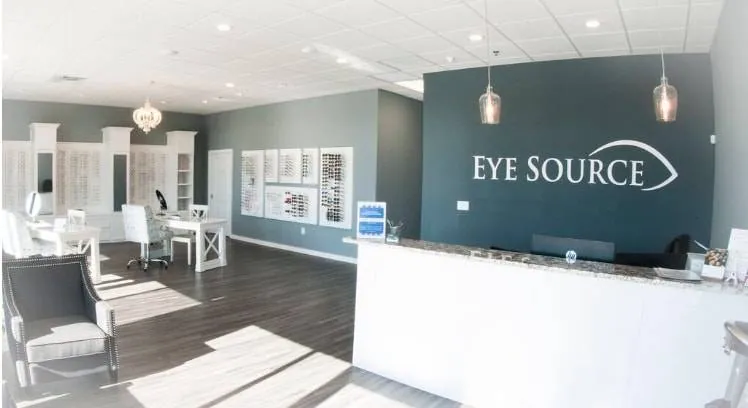
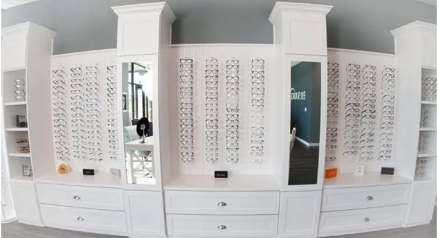
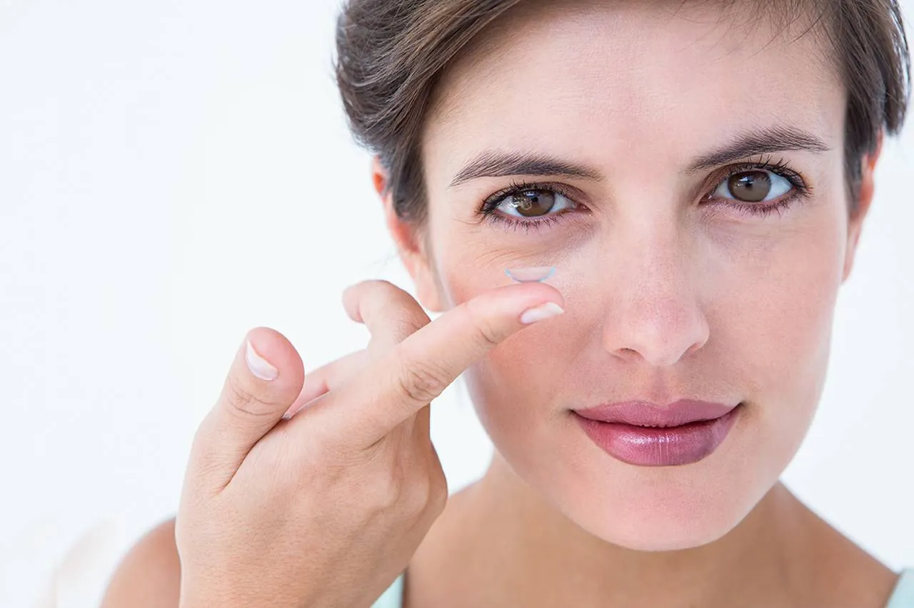
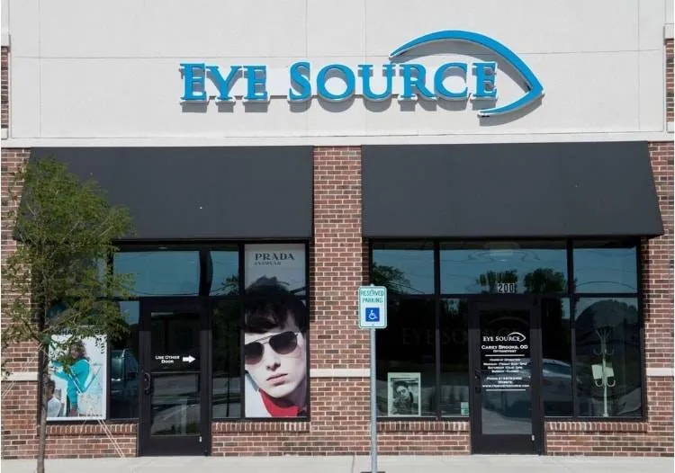

Mar 28, 2019
Are your eyes dry? Do they often burn or feel gritty?
Many of us do not produce healthy tears which can lead to these symptoms.
Frisco, TX 75034
Dr. Brooks and Craig are amazing! It was our first time coming here but we found our new eye DR.
- Adam P.Eye Source – Carey Brooks, OD
At Eye Source we welcome patients of all ages to our comfortable optometry office. Our warm and trusted eye doctors provide personalized optical and medical eye care services to satisfy your family’s needs at any age, from pediatrics to geriatrics. Depending upon your age, lifestyle and overall health condition, vision care requirements change. In our friendly clinic, we become familiar with each individual patient in order to customize eye exams and treatment options.
Our family eye care services include eye exams for kids and adults, vision correction and management of age-related eye disease. Located conveniently to serve Frisco and area residents, we offer hours to suit every family’s schedule.


Frisco, TX 75034
Dr. Carey Brooks is a graduate of the Texas A&M University Class of 2003. While at Texas A&M University, Dr. Brooks majored in Biology and minored in Business. She then went on to further her education at the University of Houston, College of Optometry where she graduated with a Doctor of Optometry degree in May of 2008. She has been practicing Optometry in the North Texas area since that time....
Dr. Brooks and Craig are amazing! It was our first time coming here but we found our new eye DR.
Best and nicest eye Dr I have ever seen! And I have seen ALOT …. Office and staff is very warm and inviting
Dr. Brooks is by far the best eye doctor I’ve ever had. She is incredibly knowledgeable, compassionate, professional, and is always quick to help when I need it most. Having moved frequently and seen numerous optometrists and specialists for my chronic uveitis, I can confidently say that Dr. Brooks stands out from the rest. She is exceptionally attentive, accommodating, and responsive whenever I have questions or experience a flare-up. Her expertise and dedication to patient care provide a level of confidence and peace of mind that is hard to find. Beyond being an outstanding doctor, Dr. Brooks and her husband have created a warm, welcoming, and patient-centered environment. Every visit feels personal, and you can tell they genuinely care about their patients’ well-being. I always leave with a smile and the reassurance that my vision and eye health are in the best possible hands. If you’re looking for an experienced, caring, and highly skilled eye doctor, I cannot recommend Dr. Brooks highly enough.
Dr. Carey Brooks is simply outstanding. I've been immensely impressed with her care, attention to detail, and focus on achieving the best possible outcome for her patients over the years. What sets her apart is the time she takes to truly understand my needs before making recommendations. Whether it's contact lenses or glasses, she consistently gets it right because she listens, asks the right questions, and genuinely cares about finding the best solution. I've seen quite a few eye doctors throughout my life due to my poor vision, and none have come close to the standard of care I've experienced in this office. The professionalism, expertise, and patient-centered approach are second to none. 10 out of 10. I highly recommend Dr. Brooks and her team to anyone looking for exceptional eye care.
Dr. Brooks and Craig were amazing! First, I had my insurance info wrong. They still took care of me and then helped me get it figured out. Dr. Brooks was very nice and professional, gave great care, and had great equipment. So happy I was recommended here.
Ordered Zeiss lenses for my daughter and myself this year, they are amazing! Great service and they have the best lenses you can get.
Dr. Brooks has been my eye doctor for many years and has been amazing every minute of it! She is the one who figured out my contact allergy and helped me get the right allergy prescriptions to safely use contacts when I was still getting used to glasses when I was younger. The glasses prescriptions I get from her are always super accurate and overall I really enjoy my annual office visits with her
Eye Care Services
We carry the latest European and American designer eyewear collections in a variety of styles, colors and materials.

Whether you wear daily, weekly or monthly disposables, or conventional (vial) lenses, check out our selection of lenses that fit your needs.
Vision insurance provides eye care, prescription eyewear and other services at a reduced cost. Learn about coverage and payment options.
Eyeglasses
Eye Care Services
Regardless of your age or physical health, it’s important to have regular eye exams.
During a complete eye exam, your eye doctor will not only determine your prescription for eyeglasses or contact lenses, but will also check your eyes for common eye diseases, assess how your eyes work together as a team and evaluate your eyes as an indicator of your overall health.
If you experience loss of vision, double vision, swelling, infection or any eye emergency, contact us immediately for guidance. We’ll help you with the best treatment to prevent complications and promote long-lasting clear eyesight.
Please call our office at: 214-872-2400 for further instructions. Use your best judgment on urgency, if you feel your need to find the nearest emergency room. Please visit our Eye Emergency page for more information.
Eye Source – Carey Brooks, OD
Mar 28, 2019
Many of us do not produce healthy tears which can lead to these symptoms.
Mar 11, 2019
Are your eyes dry? Do they often burn or feel gritty? The Eye Source is excited to offer a new procedure to help with your dry eye symptoms.
8049 Preston Rd, Ste 200
Frisco, TX 75034
